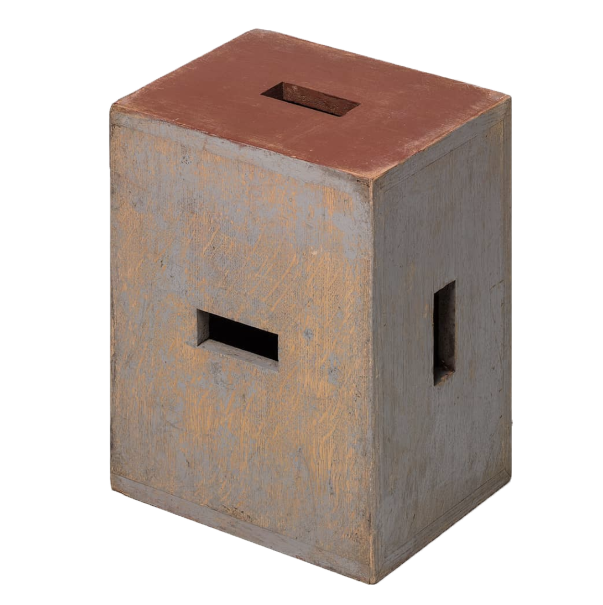
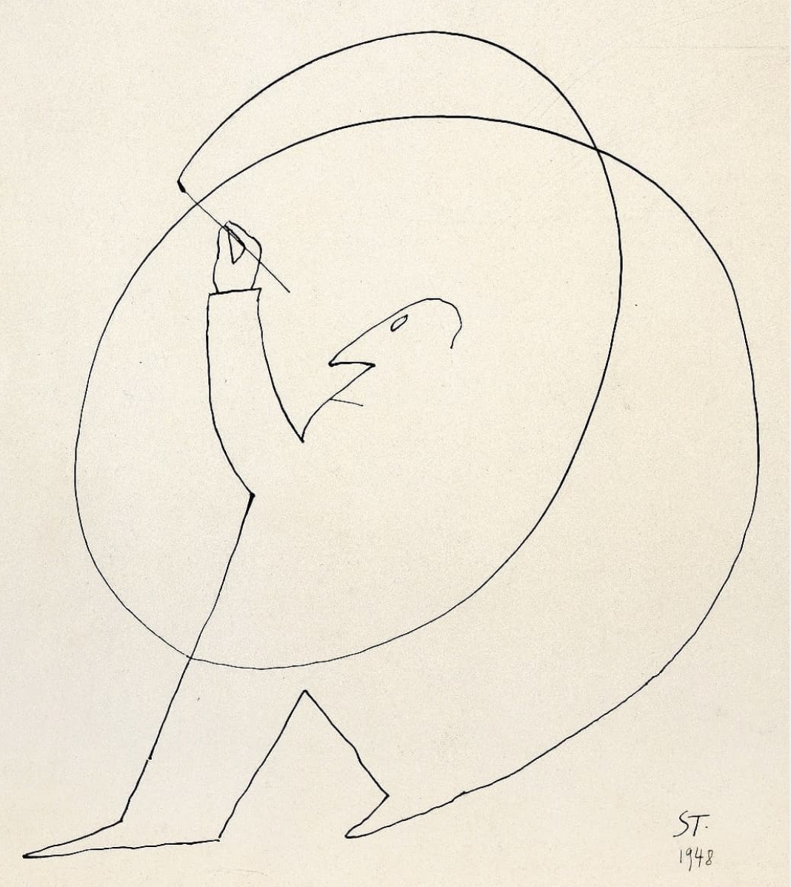
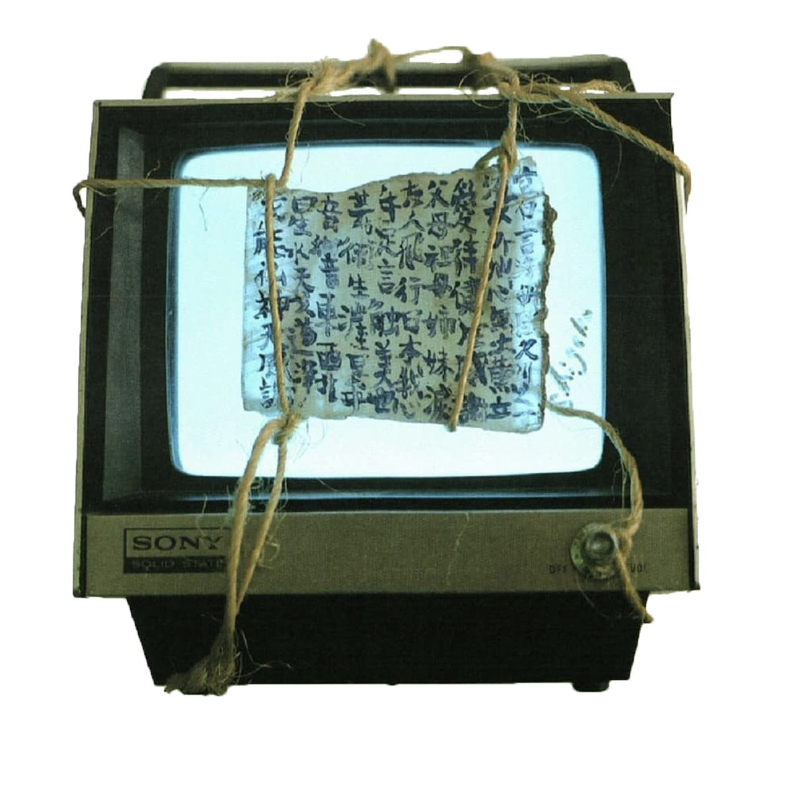

Ken Tan is a Singaporean Creative Director who has been involved in all forms of creative projects across various industries. His career started in Singapore where he worked on creative campaigns with brands like Nike, Expedia, and Disney. He has received recognition for creative excellence from D&AD and the Effie Awards. Now he’s based in New York City with a career in the arts. He has curated exhibitions in New York and Tokyo, is an avid Instagrammer (@kentansg), and writes about art for the online publication Hyperallergic. In his free time, he enjoys having his free time.
You were a Creative Director before you were Director and partner at Marc Straus Gallery. I’m interested in how advertising can be like running a gallery.
I’ve always thought like a creative entrepreneur. I have a business mind and a strategic mind when I approach creative projects.How does creativity bring maximum dollars or effectiveness for a certain objective? That’s the approach I had when I was running creative campaigns back in Singapore for different brands.
When I came to New York, I was invited to this role as Director of the gallery. It was a little bit scary, but the day I got in, I quickly realized that all the artists, all 18 of them, are like little brands. Your little Nikes of the world, your little Adidas of the world, and they each came with their own set of brand characteristics or problems.
You just have to know how to package them. You have to know how to present them to the public and create a story around the artist. If you think about it, it’s essentially the same thing as when a client comes to you with a problem: “We want to sell more of this product,” or, “we want to be seen in this sector,” or something. Then the creative people put their heads together and figure out a way to say that and make it exciting and make it work. For artists it would be: How do I present my work? How do I reach more people? How do I get placed in good collections?
It’s taking a creative approach to presenting the work. Like, if we’re showing the works of Hermann Nitsch, or when I first came in, I was working on Jeffrey Gibson… How do you approach that? It’s about understanding the art, understanding the personality—and this is important to me—spending time with the artist. Then you figure out the angle. How do you position them? Think of the tools available today. Everyone’s on Instagram. With that, and some email marketing, and with some print marketing, how do you maximize and put this presentation into the world?
After that, I use a little bit of what I used to do in advertising. Analytics plays a big part because we don’t want to just put something out there and leave it out there not knowing what happens with it. We usually look at analytics. This can be anything, like simple Google Analytics, just to see who’s visiting the site, and who’s clicking on what. When we do email campaigns, we can track who’s opening and who’s clicking through to things. We go through the data and follow up with certain leads.
As you say, it’s important to have your work seen, but then you need to do something with it. Have you found it’s helped to have people strategize what they’re doing, so they find the right place for their creative work, and aren’t just throwing it out into the void?
Definitely. Artists are people. That’s the difference between working with people and brands. It’s almost like talent management or artist management. You’re working with people. People have feelings. It’s important we respect the creative mind, the creative heart, and the creative soul that’s at play.
Anytime you put stuff into the world, there’s always going to be feedback. If you’re doing your job right, people are going to respond. The response could be good or it could be bad. It’s really about being that shoulder for your artist, to have a listening ear and help them through certain things. If it’s bad feedback, we obviously have to sit down and figure out why we’ve been getting that negative feedback. It happens. If it’s good feedback, what does that mean? You want to take the good feedback and use it constructively.
The tools like social media and marketing or websites or whatever—they’re really just tools. I think that essentially, the way we’ve been communicating has essentially not changed. Stories that we’re telling from old times to now have not changed. It’s just that the speed at which things move has gotten tremendously faster, and you have to be a bit more responsive. I like that artists can keep up with the times, though it’s not really an essential factor for their work. That said, just being on the pulse of what’s happening around the world can be a strong element for the work.
Do you have any artists who don’t use social media?
Definitely. A good example is Otis Jones, a 72-year-old Texas-based artist. He doesn’t use Instagram much. Once in a while, when he does post something, he gets a crazy number of likes, and he doesn’t quite believe it. He’s like, “Who are all these people looking at my stuff?”
Honestly, a social media platform like Instagram doesn’t sell art like another platform, like an e-commerce platform. At least, definitely not the kind of art we represent. It’s just like taking a metaphorical megaphone and speaking to the world. But you don’t want to be shouting into a megaphone all the time. That’s the way I’ve been guiding my artists through social media, especially for those who aren’t so familiar with it.
Do you think part of your role is almost like a therapist?
That’s a good way to put it. Like I was saying, artists are human beings, and they do have feelings. What you see on Instagram or what you see when you walk into a beautiful gallery are just objects. These were handmade by someone who’s spent time thinking about and sitting in front of this object and putting in crazy hours.
People doubt themselves. I’d like to think that most of the artists I’ve worked with start off with that sort of thinking: “What am I doing?” It’s almost part of being an artist that they start doubting themselves first. If an artist is too sure of him or herself then I’ll come in and say, in a very respectful and nice way, “Maybe you don’t want to be too complacent.” I feel like most artists, or at least the ones I feel matter, always have this struggle, this question of, “What am I doing with my life?” or, “What am I doing with my work?” Maybe that’s the question: “What is art for? Why make art at all?”
  How do you encourage someone who’s questioning things to get back into the headspace of finishing a show so you can get it opened on time?
There are two things here: time management and being productive.A lot of artists may not be the best managers of their own time. As a creative person, I tend to get stuck on a certain problem, too, and I’ll spend way too much time on just one small thing. Understanding that from a creative point of view, I’ll try to talk to them and move them past it. I can empathize with the way they’re feeling and I try to work on schedules with them. Clarity on schedules and deadlines help. Some artists would paint right up to the last minute when the shipper’s coming to pack up the work and take it to the gallery. So deadlines do really help.
The other part of it is the mind space. Instead of just doing it, some artists won’t start. It’s this blank-canvas syndrome—you stand in front of a blank canvas and you don’t want to do it. I feel this is when it’s important to not talk about art. You have to make the painting or the sculpture, yes, I get that, but the most exciting artists—artists who always have something fresh to say—also seem to have a sort of personal micro-culture. They’re interested in many different things. I find it interesting to connect with people like that, because if you’re stuck creatively, and you have a creative block, then you go out and you do something else and you talk about different things. You know, meeting someone at a bar and talking about stuff that doesn’t really matter over beers. That’s old school. I still enjoy it. It always helps kick-start new ideas and new ways and paths of thinking. Then you can go back home and get creative.
When I first met you, you were DJing an after party for a Clive Smith show at your gallery. How important for you is it to set the tone for an artist’s opening? Do you see what you do as collaborating with the artists, not just on the level of setting deadlines and making sure they’re in the right headspace, but also creating the aesthetics of the opening itself?
One of the main roles, and this is a catch-all role, is being a curator. As a curator you set the vibe, you set the mood, you set how it’s presented, and how it feels. You establish the atmosphere. Much of that is knowing the space. I have a lot of things to say and suggest. It doesn’t work if it’s not collaborative. Ultimately, it’s the artist’s show, and we want to be respectful of that. We’re here as partners. “This is our space, and we know it well. Would you be open to these kind of ideas?” I think it’s always good to be open, and also to open up the ideas of the gallery itself, and what it can be. Instead of just looking at a gallery as a space for art, really treating it like a creative hub where many things can happen.
How do you set the right tone for potential buyers, while making sure they see the value of the work?
Clients complete the loop. The artist makes the work and we show the work, but somebody has to buy the work and support and believe in it. The good thing is, we’re collectors ourselves and we own work from almost all the artists that we show in our personal collections. We put in our own money. We bought work. This shows that we believe in it. That helps a little.
Everyone’s entitled to their own personal opinion. If we do everything right—if the work is presented correctly, the vibe’s right, if the artist is on fire, and he’s creating the best work in his life—then the person can come in and they can judge the quality of the work themselves. In that case, selling it is really not so difficult.
Art’s this crazy thing… let’s say you have just decided to be a collector. That’s the most difficult bit: making your first purchase. Like, you either are or aren’t a collector. I’ve met people who’ve never thought about collecting in their lives. That’s a little bit more of a challenge to show them why they should part with x amount of dollars to buy this crazy sculpture that takes up space in their living room and that potentially could get knocked over and break. That takes a bit more work.
If you’re a collector then what you want to know is the resume of this artist—where he or she has shown, how diligent he or she is, how hardworking. Then you really just decide if you want to support that. In our job it’s really about the relationships. I have this experience of working with many clients during my advertising days. It’s really building and fostering and keeping up with these relationships.
We talk all the time about our interests, and I’ll show them the stuff that I’m interested in, which is not always from this gallery. I don’t want to be pimping the gallery, so to speak, because I personally do think that art should be enjoyed very widely—it’s not only about us. If you like art, likely you’ll be buying from five or six different galleries, not just one. We’re constantly on WhatsApp chatting with collectors. That really helps because then we build this trust. I know their taste and I trust that they’ll do the right thing, and they trust my taste so when I do make a recommendation, it’s a lot easier than just coming into a shop and being like, “Alright, convince me.”
Do you think that in 2018 an artist can make a living without a gallery?
The role of the gallery is a launchpad, a platform. It depends on the gallery and its mission. A gallery, because it’s an establishment for showing work, has the ability to participate in art fairs. International art fairs are something that an independent visual artist won’t have access to. In today’s world, art fairs are the place that you get seen by new people, by curators, by collectors, by museum people, and usually that’s where people start to debut certain stuff as well. I would say, for a fact, this would be the biggest reason why a visual artist would want to work with galleries—access to visibility in great fairs.
The second thing would be: It’s a lot of work to be managing your own inventory and developing the strategies of how to present your work. I think it’s almost two different brains. You making the work is one brain. You presenting the work is a whole different brain. It’s sort of like a left brain, right brain thing. Not many people can do both.
It’s really about the type of work that you make—and your ambitions as well. If you’re making smaller stuff that’s easier to market by yourself, then yes, maybe you can work without a gallery. If you have a larger voice, and you’re doing complex installation-based conceptual work, then you probably need the help of a bigger gallery to help present and frame your work and package your brand the right way to the right people. That’s more than a full-time job.
Is it useful for a young artist to get an MFA or is it better to just get your works seen by potential galleries?
I think it’s important to go to school. I look at that in the resume—what kind of school you went to—because it shows me, immediately, the sort of people you’re up against from that school. In most cases, you’re not a hidden prodigy who suddenly emerges with this crazy talent. You have to work your way to get it.
What would be your advice for young or new artists?
It’s important for artists to have a gallery, but you need the right gallery. During the early stages of your career, it’s important that you focus on making good work. Make good work and have something original to say. I know I’m oversimplifying, but if you’re a creative person, and you have an original voice, the galleries will come. Rather than looking and dreaming of working with so-and-so’s gallery, just do the work. Sometimes, even if you get picked up by one of the biggest galleries, it may not be a good thing if it’s not the right gallery. So my advice for young visual artists would be to have an original thing to say and to work hard at it.
Once you have a great story, once you have a great thing going, keep at it. I’ve so often seen young artists come in and they’re so hot because they’re feeling this creativity rushing through them, and they make great work. Then they burn out. You don’t see them for five or six years, and when they come back, the second body of work is not as exciting. So, figure out how to keep going. If you burn out, collectors and curators will start to drop you. Consistency and hard work is all part of being an artist.
Once you have all of that, then yes, get with the program—be on the pulse of what the new world is and be on Instagram and show your work well. That’s another good point: Show your work well. Cameras on phones are great, but some people really suck at taking photos There’s nothing worse than making good work and posting a shitty photo that no one can see. What’s the point?
You’ve chosen this path, and as an artist, you want to make something, you want to have something to say—it’s hard work finding new things to say all the time, and to be original while doing it. It’s about understanding what’s going on in the world. You want that presence. You can’t be an artist in today’s fast-moving, complicated, and confused world, without wanting to say something about it. Actually, maybe that’s one way you could always think of new things to say.
It’s a crazy job, deciding to be an artist—it’s insane if you think about it. What kind of job is that? In some countries it’s not even listed as a recognized occupation. In the same breadth, I think running a gallery or anything in this industry, is just as difficult and challenging.
Ken Tan recommends: